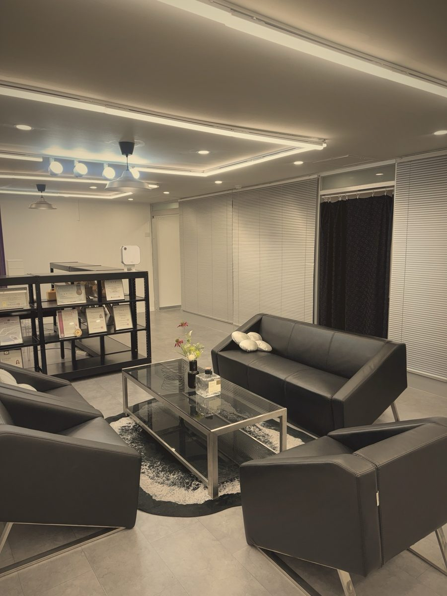
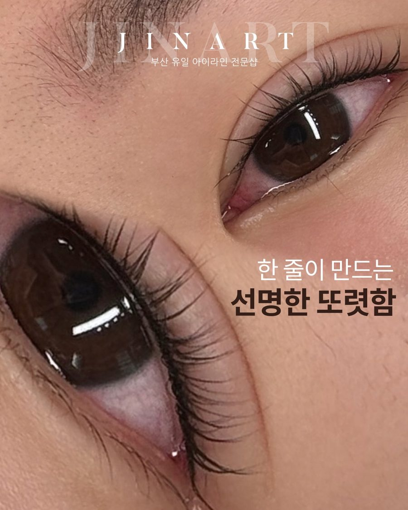
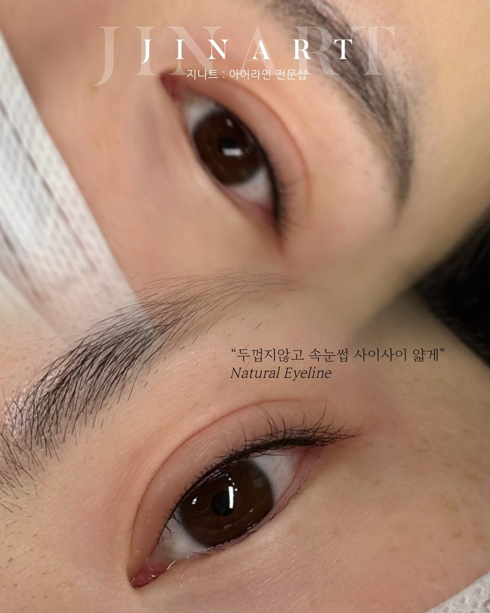
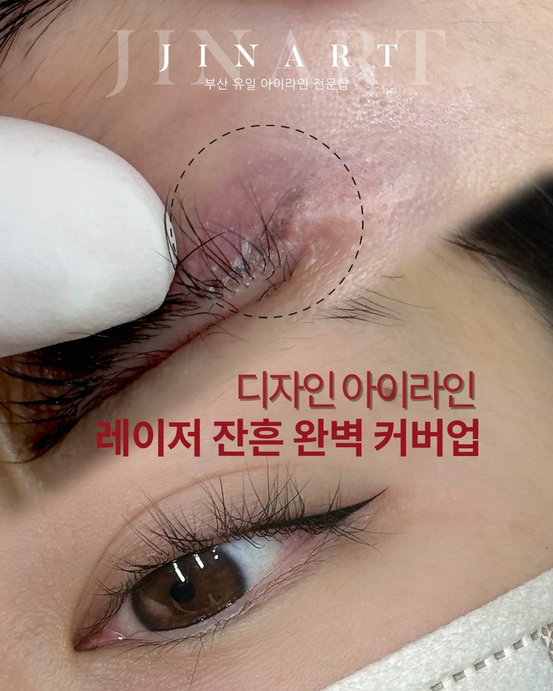
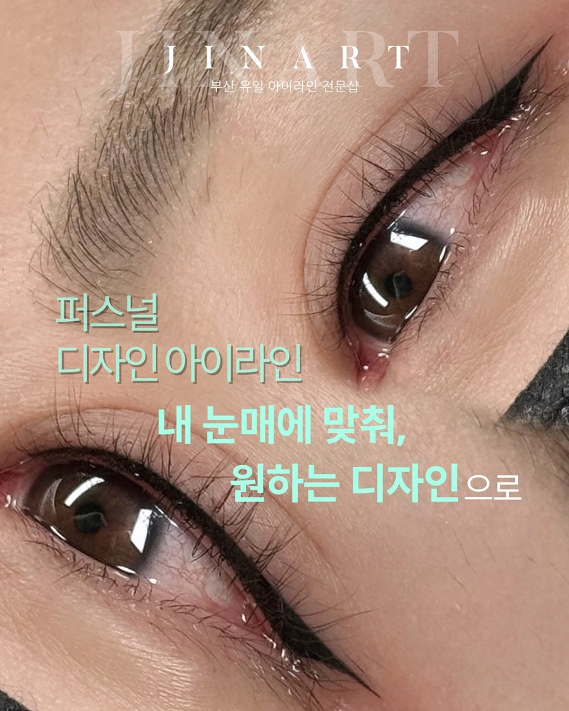
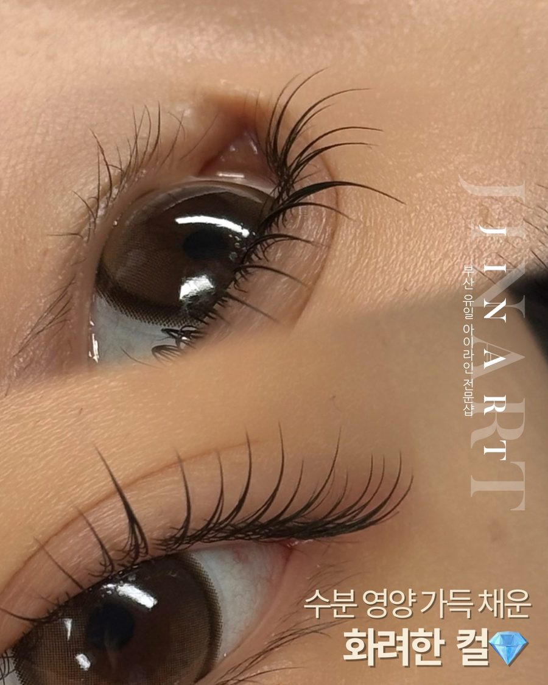
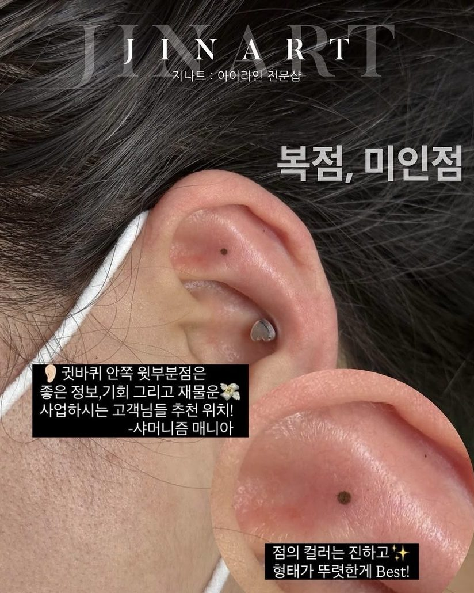

1회용 멸균 니들
니들·팁 등 시술 도구는 1인 1도구로 사용 후 바로 폐기합니다.
부산 전포 · 아이라인 전문 스튜디오
눈매를 설계하는 1:1 아이라인 스튜디오
10년 동안 아이라인과 속눈썹만 다뤄온 대표원장이 한 분씩 마주 앉아, 얼굴형과 눈매에 맞는 라인을 함께 그립니다. 예약제로 운영해 시술 시간 내내 한 분만을 위해 자리를 비워 둡니다.

Signature
점막과 눈썹 라인은 눈매를 먼저 보고 설계합니다. 상담에서 라인·두께·컬러를 확정한 뒤 시술을 시작합니다.
속눈썹 사이 점막에 얇게 넣어 눈이 맑고 또렷해 보이는 라인
상담 문의
눈매에 맞춰 라인·꼬리·두께를 설계. 옛 레이저 잔흔 커버 가능
상담 문의
눈썹 결을 살려 자연스럽게 잡아 주는 눈썹 반영구
상담 문의
자연 속눈썹을 위로 말아 올려 연장 없이 또렷한 눈매로
40,000원
숱이 적거나 옅은 눈썹에 색을 올려 윤곽을 정리
35,000원
원하는 위치에 작고 정교하게
40,000원
예약 전 눈매와 디자인, 컬러를 함께 정하는 상담
무료
가격은 원화(KRW) 기준입니다. 반영구 시술은 눈매와 디자인, 기존 잔흔 여부에 따라 상담 후 안내드립니다.
카카오톡 채널로 가격 문의Gallery
지나트뷰티에서 직접 촬영한 사진입니다. 피부와 회복 과정, 디자인에 따라 결과는 달라집니다.






Promise
작은 스튜디오라 지킬 수 있는 것들입니다. 도구와 시간, 디자인을 한 분 기준으로만 씁니다.
니들·팁 등 시술 도구는 1인 1도구로 사용 후 바로 폐기합니다.
같은 라인도 얼굴형에 따라 다릅니다. 눈매와 눈꺼풀 모양을 먼저 보고 그립니다.
10년간 아이라인과 속눈썹만 다뤄온 손끝으로 굵기와 각도, 회복까지 살핍니다.
시술 전후 공간과 도구를 소독하고, 예약 간격을 두어 한 분씩 맞이합니다.
Visit
전포역 6번 출구에서 도보 5분, 동성로 27 5층입니다. 주차와 예약 안내를 함께 확인해 주세요.
FAQ
카카오톡 채널로 원하는 날짜와 시술을 보내 주시면 가능한 시간을 안내드립니다. 속눈썹펌은 네이버 예약으로도 바로 예약할 수 있습니다.
눈매와 디자인, 기존 잔흔 여부에 따라 작업 시간이 달라져 상담 후 안내드립니다. 맨눈 사진을 카카오톡으로 보내 주시면 더 정확히 안내드릴 수 있습니다.
상담과 디자인 확인을 포함해 2시간 전후로 생각하시면 됩니다.
피부와 생활 습관에 따라 다르지만 보통 1~2년이며, 리터치로 라인을 정돈할 수 있습니다.
건물 주차가 가능하며, 만차일 때는 동성고 옆 제일주차장 1시간 주차를 지원해 드립니다.
네. 영어·중국어·일본어로 상담할 수 있고, 페이지 상단의 언어 버튼으로 원하는 언어를 고르실 수 있습니다.
Reservation
맨눈 사진과 원하는 느낌을 카카오톡 채널로 보내 주세요. 가능한 시간과 디자인을 함께 정해 드립니다.